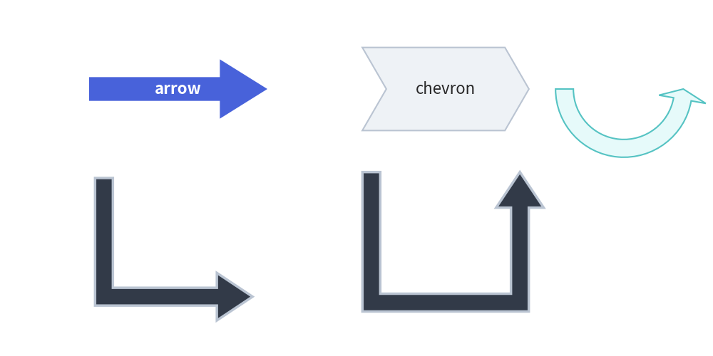
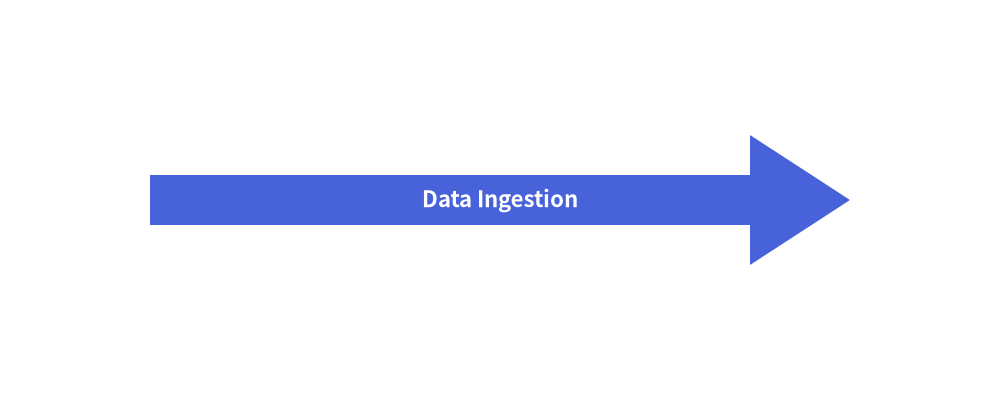
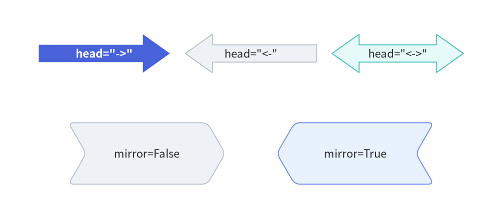
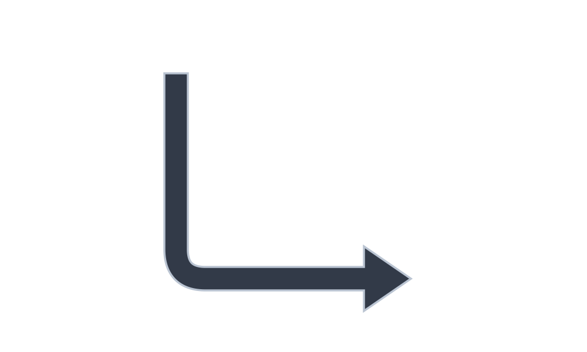
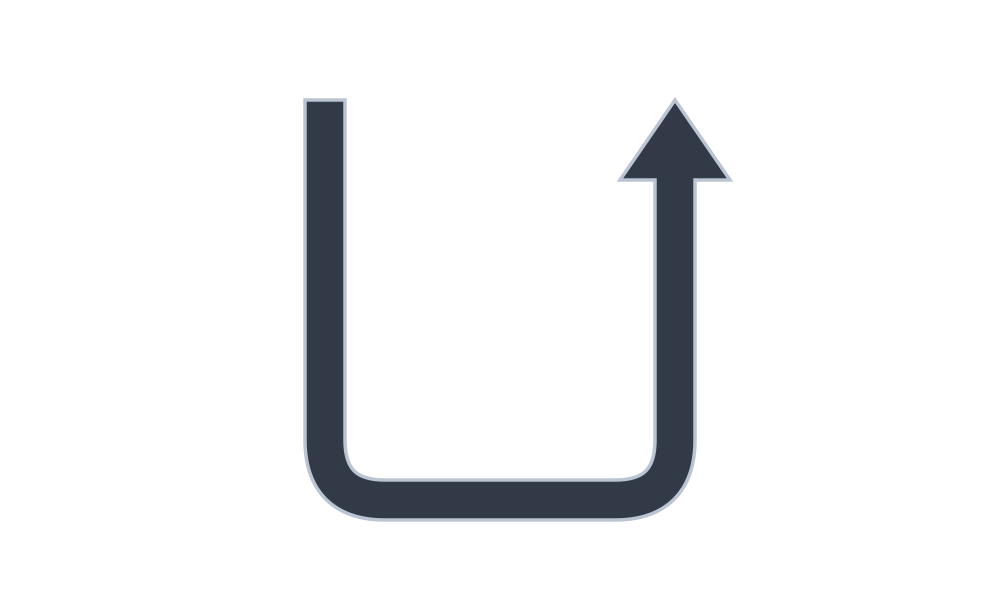
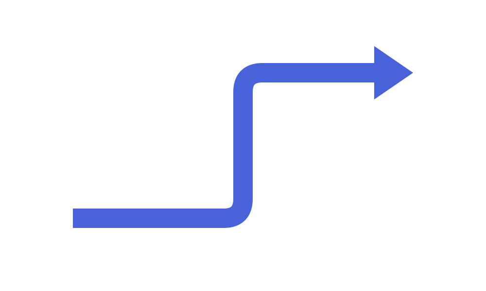

Block Arrows
In addition to line connectors (drawlib.lines), Drawlib provides six directed block arrow primitives in drawlib.shapes.
Block arrows are closed 2D polygons with customizable tail widths, arrowhead dimensions, and corner rounding. They are widely used for data pipelines, architectural flows, and process stages.

Source Code
from drawlib.canvas import save, setup
from drawlib.shapes import arrow, arrow_arc, arrow_l, arrow_polyline, arrow_u, chevron, rectangle
from drawlib.styles import Styles
from drawlib.text import text
setup(width=124, height=62)
# Subtle background cards for 3x2 grid
for cx in (22, 62, 102):
for cy in (45.5, 16.5):
rectangle((cx, cy), width=36, height=25, style=Styles.Neutral.patch(shape_r=2))
lbl = Styles.DarkBold.patch(text_size=10.5)
# 1. Straight Block Arrow (Hero)
arrow((9, 49.5), (35, 49.5), tail_width=5.0, head_width=10.5, head_length=7.5, style=Styles.PrimaryFlat, text="arrow", text_style=Styles.WhiteBold.patch(text_size=10.5))
text((22, 37.5), "1. arrow()", style=lbl)
# 2. Chevron
chevron((62, 49.5), width=25, height=11.5, corner_angle=60, style=Styles.SecondaryNeutral.patch(shape_r=1), text="chevron", text_style=Styles.DarkBold.patch(text_size=10.5))
text((62, 37.5), "2. chevron()", style=lbl)
# 3. L-shaped Arrow
arrow_l((102, 50.5), width=20, height=12, tail_width=3.2, head_width=8, head_length=6, style=Styles.DarkBold.patch(shape_r=2.5))
text((102, 37.5), "3. arrow_l()", style=lbl)
# 4. U-turn Arrow
arrow_u((22, 20.5), width=20, height=12, tail_width=3.2, head_width=8, head_length=6, style=Styles.DarkBold.patch(shape_r=3))
text((22, 8.5), "4. arrow_u()", style=lbl)
# 5. Arrow Arc (Circular flow)
arrow_arc((62, 23.5), width=20, height=14, angle_start=180, angle_end=0, tail_width=3.2, head_width=8, head_angle=14, style=Styles.SecondaryNeutral)
text((62, 8.5), "5. arrow_arc()", style=lbl)
# 6. Multi-Point Polyline Arrow
arrow_polyline([(90, 15.5), (101, 15.5), (101, 23.5), (114, 23.5)], tail_width=3.2, head_width=8, head_length=6, style=Styles.PrimaryNeutral.patch(shape_r=2))
text((102, 8.5), "6. arrow_polyline()", style=lbl)
save()
1. Overview of Block Arrow Functions
The six block arrow functions in drawlib.shapes fall into two groups with respect to text labeling:
- Embedded Label Support (
text&text_style):arrow()andchevron()accepttextandtext_styledirectly. - Standalone Label Placement (
drawlib.text.text()):arrow_l(),arrow_u(),arrow_arc(), andarrow_polyline()do not accepttextortext_style; place a standalonetext(xy, ...)call adjacent to the arrow path.
2. Straight Block Arrow (arrow)
Draws a directed block arrow between two arbitrary coordinates xy1 and xy2.
arrow(
xy1: tuple[float, float],
xy2: tuple[float, float],
tail_width: float,
head_width: float,
head_length: float,
head: Literal["->", "<-", "<->"] = "->",
*,
style: Style,
text: str = "",
text_style: Style | None = None,
) -> None
| Parameter | Type | Default | Description |
|---|---|---|---|
xy1 |
tuple[float, float] |
Required | Base center coordinate of the arrow tail (x1, y1). |
xy2 |
tuple[float, float] |
Required | Tip coordinate of the arrowhead (x2, y2). |
tail_width |
float |
Required | Width of the rectangular shaft (> 0). |
head_width |
float |
Required | Full transverse width of the arrowhead base (> 0). |
head_length |
float |
Required | Axial length of the arrowhead from base to tip (> 0). |
head |
Literal["->", "<-", "<->"] |
"->" |
Arrowhead direction: forward ("->"), backward ("<-"), or bidirectional ("<->"). |
style |
Style |
Required | Shape fill and stroke style. |
text |
str |
"" |
Embedded label centered and auto-rotated along the arrow shaft. |
text_style |
Style | None |
None |
Optional typography style override for text. |
from drawlib.canvas import save, setup
from drawlib.lines import line
from drawlib.shapes import arrow, circle
from drawlib.styles import Styles
from drawlib.text import text
setup(width=120, height=50)
# Primary straight block arrow from xy1=(28, 24) to xy2=(84, 24)
arrow(
(28, 24),
(84, 24),
tail_width=8.5,
head_width=18,
head_length=14,
head="->", # "->", "<-", or "<->"
style=Styles.PrimaryFlat,
text="Data Ingestion",
text_style=Styles.WhiteBold.patch(text_size=11.0),
)
# Endpoint markers for xy1 and xy2
circle((28, 24), radius=1.2, style=Styles.DangerFlat)
line((28, 24), (28, 11), style=Styles.DangerDashed)
text((28, 7.0), "xy1 (28, 24)", style=Styles.DangerBold.patch(text_size=10.5))
circle((84, 24), radius=1.2, style=Styles.DangerFlat)
line((84, 24), (84, 11), style=Styles.DangerDashed)
text((84, 7.0), "xy2 (84, 24)", style=Styles.DangerBold.patch(text_size=10.5))
# Dimension: tail_width (shaft y = 19.75..28.25)
line((18, 19.75), (28, 19.75), style=Styles.MutedDashed)
line((18, 28.25), (28, 28.25), style=Styles.MutedDashed)
line((20, 19.75), (20, 28.25), arrow_head="<->", style=Styles.DarkBold)
text((10, 24), "tail_width", style=Styles.DarkBold.patch(text_size=10.5))
# Dimension: head_length (x = 70..84)
line((70, 33), (70, 41), style=Styles.MutedDashed)
line((84, 24), (84, 41), style=Styles.MutedDashed)
line((70, 39), (84, 39), arrow_head="<->", style=Styles.DarkBold)
text((77, 43.5), "head_length", style=Styles.DarkBold.patch(text_size=10.5))
# Dimension: head_width (arrowhead base y = 15..33)
line((70, 15), (96, 15), style=Styles.MutedDashed)
line((70, 33), (96, 33), style=Styles.MutedDashed)
line((94, 15), (94, 33), arrow_head="<->", style=Styles.DarkBold)
text((107, 24), "head_width", style=Styles.DarkBold.patch(text_size=10.5))
save()

3. Process Chevron (chevron)
Draws an interlocking 6-vertex arrowhead-shaped block with an indented rear notch, ideal for sequential stage diagrams.
chevron(
xy: tuple[float, float],
width: float,
height: float,
corner_angle: float,
mirror: bool = False,
*,
style: Style,
text: str = "",
text_style: Style | None = None,
) -> None
| Parameter | Type | Default | Description |
|---|---|---|---|
xy |
tuple[float, float] |
Required | Anchor coordinate (x, y) (center by default with preset Styles.*). |
width / height |
float |
Required | Horizontal body width and vertical height (> 0). |
corner_angle |
float |
Required | Tip and rear notch angle in degrees (0 < corner_angle < 90). |
mirror |
bool |
False |
If True, mirrors the chevron horizontally so it points left. |
style |
Style |
Required | Fill, stroke, rotation (style.angle), and vertex rounding (style.shape_r as a scalar float or 6-tuple of per-vertex radii). |
text / text_style |
str / Style | None |
"" / None |
Centered text label and optional typography override. |
from drawlib.canvas import save, setup
from drawlib.shapes import chevron
from drawlib.styles import Styles
setup(width=100, height=36)
chevron(
(50, 18),
width=42,
height=20,
corner_angle=60, # Tip acute angle
style=Styles.PrimaryFlat,
text="Stage 1",
text_style=Styles.WhiteBold.patch(text_size=12.0),
)
save()
Arrowhead Directions (head) & Mirrored Chevrons (mirror=True)
All directed block arrows (arrow, arrow_l, arrow_u, arrow_arc, arrow_polyline) support head="->", head="<-", and head="<->", while chevron() supports horizontal reversal via mirror=True:
from drawlib.canvas import save, setup
from drawlib.shapes import arrow, chevron
from drawlib.styles import Styles
setup(width=124, height=52)
# Top row: head="->", head="<-", head="<->"
arrow((6, 39), (41, 39), tail_width=5.5, head_width=11, head_length=7, head="->", style=Styles.PrimaryFlat, text='head="->"', text_style=Styles.WhiteBold.patch(text_size=10.5))
arrow((44.5, 39), (79.5, 39), tail_width=5.5, head_width=11, head_length=7, head="<-", style=Styles.Neutral, text='head="<-"', text_style=Styles.DarkBold.patch(text_size=10.5))
arrow((83, 39), (118, 39), tail_width=5.5, head_width=11, head_length=7, head="<->", style=Styles.SecondaryNeutral, text='head="<->"', text_style=Styles.DarkBold.patch(text_size=10.5))
# Bottom row: Standard chevron (mirror=False) vs Mirrored chevron (mirror=True)
chevron((35, 15), width=36, height=16, corner_angle=60, mirror=False, style=Styles.Neutral.patch(shape_r=1.5), text="mirror=False", text_style=Styles.DarkBold.patch(text_size=11.0))
chevron((89, 15), width=36, height=16, corner_angle=60, mirror=True, style=Styles.PrimaryNeutral.patch(shape_r=1.5), text="mirror=True", text_style=Styles.DarkBold.patch(text_size=11.0))
save()

[!TIP] For chained multi-stage chevron pipelines, consider using the high-level
ChevronProcesscomponent, which calculates automatic spacing and themes.
4. Orthogonal Routed Arrows (arrow_l, arrow_u)
[!NOTE]
arrow_l()andarrow_u()do not accepttextortext_style. Use standalonedrawlib.text.text()to place labels near the elbow or shaft.
L-Shaped Corner Arrow (arrow_l)
Draws a 90-degree right-angled block arrow centered at xy within a bounding box (width, height).
arrow_l(
xy: tuple[float, float],
width: float,
height: float,
tail_width: float,
head_width: float,
head_length: float,
head: Literal["->", "<-", "<->"] = "->",
*,
style: Style,
) -> None
| Parameter | Type | Default | Description |
|---|---|---|---|
xy |
tuple[float, float] |
Required | Center coordinate (x, y) of the L-arrow bounding box. |
width / height |
float |
Required | Bounding box horizontal width and vertical height (> 0). |
tail_width |
float |
Required | Shaft width (> 0). |
head_width / head_length |
float |
Required | Arrowhead width and axial length (> 0). |
head |
Literal["->", "<-", "<->"] |
"->" |
Arrowhead direction ("->", "<-", or "<->"). |
style |
Style |
Required | Fill, stroke, rotation (style.angle), and elbow rounding radius (style.shape_r as a scalar float or 1-tuple). |
from drawlib.canvas import save, setup
from drawlib.shapes import arrow_l
from drawlib.styles import Styles
setup(width=100, height=60)
arrow_l(
(50, 30),
width=40,
height=35,
tail_width=4,
head_width=11,
head_length=8,
# Corner rounding radius
style=Styles.DarkBold.patch(shape_r=5),
)
save()

U-Turn Feedback Arrow (arrow_u)
Draws a 180-degree turnaround block arrow centered at xy, typically used for retry mechanisms or feedback loops.
arrow_u(
xy: tuple[float, float],
width: float,
height: float,
tail_width: float,
head_width: float,
head_length: float,
head: Literal["->", "<-", "<->"] = "->",
*,
style: Style,
) -> None
| Parameter | Type | Default | Description |
|---|---|---|---|
xy |
tuple[float, float] |
Required | Center coordinate (x, y) of the U-arrow bounding box. |
width / height |
float |
Required | Bounding box horizontal width and vertical height (> 0). |
tail_width |
float |
Required | Shaft width (> 0). |
head_width / head_length |
float |
Required | Arrowhead width and axial length (> 0). |
head |
Literal["->", "<-", "<->"] |
"->" |
Arrowhead direction ("->", "<-", or "<->"). |
style |
Style |
Required | Fill, stroke, rotation (style.angle), and turn rounding radius (style.shape_r as a scalar float or 2-tuple (r1, r2) for the two corners). |
from drawlib.canvas import save, setup
from drawlib.shapes import arrow_u
from drawlib.styles import Styles
setup(width=100, height=60)
arrow_u(
(50, 30),
width=35,
height=40,
tail_width=4,
head_width=11,
head_length=8,
# Corner rounding radius (scalar or 2-tuple)
style=Styles.DarkBold.patch(shape_r=6),
)
save()

5. Circular & Multi-Point Arrows (arrow_arc, arrow_polyline)
[!NOTE]
arrow_arc()andarrow_polyline()do not accepttextortext_style. Use standalonedrawlib.text.text()to place labels inside or alongside the curve/path.
Circular Arc Arrow (arrow_arc)
Draws an elliptical arc block arrow between angle_start and angle_end.
arrow_arc(
xy: tuple[float, float],
width: float,
height: float,
tail_width: float,
head_width: float,
head_angle: float = 10,
head: Literal["->", "<-", "<->"] = "->",
angle_start: float = 0,
angle_end: float = 180,
*,
style: Style,
) -> None
| Parameter | Type | Default | Description |
|---|---|---|---|
xy |
tuple[float, float] |
Required | Center coordinate (x, y) of the underlying ellipse. |
width / height |
float |
Required | Horizontal and vertical diameters of the arc ellipse (> 0). |
tail_width / head_width |
float |
Required | Curved shaft width and arrowhead base width (> 0). |
head_angle |
float |
10 |
Angular span of the arrowhead in degrees. |
head |
Literal["->", "<-", "<->"] |
"->" |
Arrowhead direction ("->", "<-", or "<->"). |
angle_start / angle_end |
float |
0 / 180 |
Starting and ending angles in degrees counterclockwise (CCW). |
style |
Style |
Required | Fill, stroke, and whole-arc rotation (style.angle). |
from drawlib.canvas import save, setup
from drawlib.shapes import arrow_arc
from drawlib.styles import Styles
setup(width=100, height=35)
arrow_arc(
(50, 26),
width=45,
height=32,
tail_width=4,
head_width=11,
head_angle=12,
head="->",
angle_start=180,
angle_end=0,
style=Styles.DarkBold,
)
save()
Multi-Point Polyline Arrow (arrow_polyline)
Draws a complex routed block arrow passing through an arbitrary list of waypoint coordinates [(x1, y1), (x2, y2), ...].
arrow_polyline(
xys: list[tuple[float, float]],
tail_width: float,
head_width: float,
head_length: float,
head: Literal["->", "<-", "<->"] = "->",
*,
style: Style,
) -> None
| Parameter | Type | Default | Description |
|---|---|---|---|
xys |
list[tuple[float, float]] |
Required | Sequence of at least 2 waypoint coordinates [(x1, y1), (x2, y2), ...]. |
tail_width |
float |
Required | Width of the polyline shaft (> 0). |
head_width / head_length |
float |
Required | Arrowhead width and axial length (> 0). |
head |
Literal["->", "<-", "<->"] |
"->" |
Arrowhead direction ("->", "<-", or "<->"). |
style |
Style |
Required | Fill, stroke, and joint corner rounding (style.shape_r as a scalar float or a (len(xys) - 2)-tuple of per-joint radii). |
from drawlib.canvas import save, setup
from drawlib.shapes import arrow_polyline
from drawlib.styles import Styles
setup(width=100, height=60)
arrow_polyline(
[(15, 15), (50, 15), (50, 45), (85, 45)],
tail_width=4,
head_width=11,
head_length=8,
head="->",
# Uniform scalar radius or (len(xys) - 2)-tuple per intermediate joint
style=Styles.PrimaryFlat.patch(shape_r=(3, 6)),
)
save()
